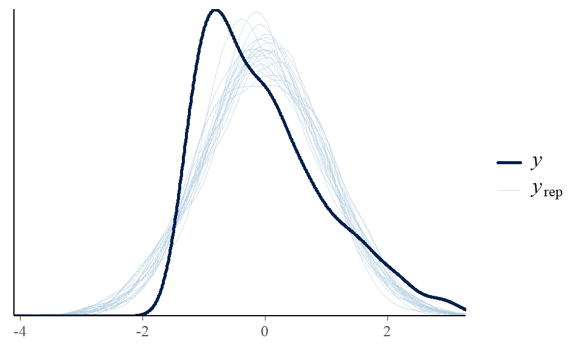
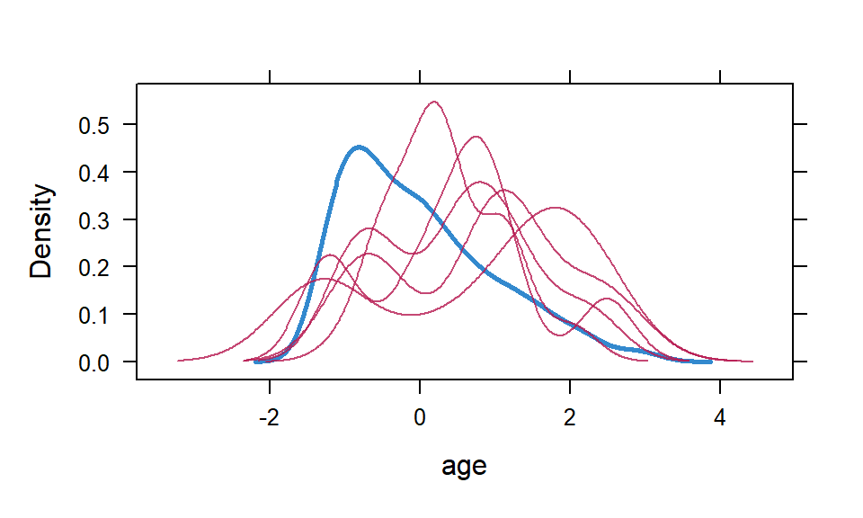

Chapter 6 More Missing Data
6.1 Simple mean imputation vs. multiple imputation
Here we illustrate simple mean imputation.
d <- read.csv("data/cohen2015miss.csv")
d$age <- scale(d$age) |> as.numeric()
d_mimp <- d
d_mimp$age <- with(d_mimp,
ifelse(is.na(age),
mean(age, na.rm = T),
age))
lm(act ~ subsidy + age, data = d_mimp) |> summary()##
## Call:
## lm(formula = act ~ subsidy + age, data = d_mimp)
##
## Residuals:
## Min 1Q Median 3Q Max
## -0.4774 -0.3866 -0.2396 0.5566 0.9431
##
## Coefficients:
## Estimate Std. Error t value Pr(>|t|)
## (Intercept) 0.19126 0.03555 5.380 1.05e-07 ***
## subsidy 0.19535 0.04151 4.706 3.11e-06 ***
## age -0.06592 0.01892 -3.485 0.000527 ***
## ---
## Signif. codes: 0 '***' 0.001 '**' 0.01 '*' 0.05 '.' 0.1 ' ' 1
##
## Residual standard error: 0.4608 on 628 degrees of freedom
## (34 observations deleted due to missingness)
## Multiple R-squared: 0.05275, Adjusted R-squared: 0.04973
## F-statistic: 17.49 on 2 and 628 DF, p-value: 4.074e-08We can compare with a complete-case analysis…
##
## Call:
## lm(formula = act ~ subsidy + age, data = d)
##
## Residuals:
## Min 1Q Median 3Q Max
## -0.4908 -0.3978 -0.2439 0.5472 0.9378
##
## Coefficients:
## Estimate Std. Error t value Pr(>|t|)
## (Intercept) 0.19579 0.03679 5.321 1.46e-07 ***
## subsidy 0.20467 0.04291 4.769 2.33e-06 ***
## age -0.06558 0.01905 -3.443 0.000615 ***
## ---
## Signif. codes: 0 '***' 0.001 '**' 0.01 '*' 0.05 '.' 0.1 ' ' 1
##
## Residual standard error: 0.464 on 598 degrees of freedom
## (64 observations deleted due to missingness)
## Multiple R-squared: 0.05574, Adjusted R-squared: 0.05258
## F-statistic: 17.65 on 2 and 598 DF, p-value: 3.565e-08… As well as multiple imputation.
## term estimate std.error statistic df p.value
## 1 (Intercept) 0.18965550 0.03496624 5.423960 550.9040 8.739647e-08
## 2 subsidy 0.19910361 0.04072650 4.888798 580.3649 1.314949e-06
## 3 age -0.06753163 0.01892160 -3.569022 153.9652 4.781627e-04In all cases, the point estimate for both the intercept and effect of subsidy is around 0.20.
6.2 “Combine then predict” or “predict then combine”?
In the main text we say that we have a choice to make when working with a model fitted on multiply imputed data: Do we apply Rubin’s pooling rules on the model coefficients or on model predictions? We can refer to these different approaches as “combine then predict” and “predict then combine,” respectively, following Miles [REF].
Since different R packages implement post-processing of multiply imputed model fits differently, we show a basic implementations here with two popular R packages. What the packages have in common is that they allow us to conveniently work with the mice object as we would any other model fit. Let’s proceed with the malaria subsidy data and imagine we want an average treatment effect of the subsidy treatment of ACT uptake marginal of age using g-computation.
6.2.1 marginaleffects
The marginaleffects package [REF] implements “predict then combine”; that is, it obtains model predictions for each of the m data sets and then apply Rubin’s rules to the predictions to pool them. G-computation is very straightforward to implement.
##
## Term Contrast Estimate Std. Error t Pr(>|t|) S 2.5 % 97.5 %
## subsidy mean(1) - mean(0) 0.199 0.0407 4.89 <0.001 19.9 0.119 0.279
## Df
## 5965
##
## Columns: term, contrast, estimate, std.error, s.value, predicted_lo, predicted_hi, predicted, df, statistic, p.value, conf.low, conf.high
## Type: response6.2.2 emmeans
On the other hand, the emmeans package [REF] implements “combine then predict”; that is, it applies Rubin’s rules to the model coefficients to pool them and only then obtain model predictions. A basic g-computation implementation could like this using emmeans.
## contrast estimate SE df lower.CL upper.CL
## subsidy1 - subsidy0 0.199 0.0407 580 0.119 0.279
##
## Confidence level used: 0.95We see that results are identical to those obtained with marginaleffects.
6.2.3 Comparison
But let’s try to see when the two different approaches give different results. Instead of a linear model on the imputed datasets, we instead use a non-linear model in the form of a logistic regression. We do this by calling glm() instead of lm() and setting family = "binomial".
Then, we apply our two approaches. The marginaleffects implementation is identical to above even though the model fit is now a logistic regression.
##
## Term Contrast Estimate Std. Error t Pr(>|t|) S 2.5 % 97.5 %
## subsidy mean(1) - mean(0) 0.201 0.0369 5.44 <0.001 24.1 0.128 0.273
## Df
## 3541
##
## Columns: term, contrast, estimate, std.error, s.value, predicted_lo, predicted_hi, predicted, df, statistic, p.value, conf.low, conf.high
## Type: responseFor the emmeans approach, to get predictions on the probability scale, we can wrap the ref_grid() function in regrid() and set type = "response". We see that results are very similar but not identical.
emmeans(specs = "subsidy",
regrid(ref_grid(fit_binom),
type = "response")) |>
contrast("revpairwise") |>
confint()## contrast estimate SE df lower.CL upper.CL
## subsidy1 - subsidy0 0.203 0.037 1566 0.13 0.275
##
## Confidence level used: 0.956.3 Bayesian imputation
In the book, we also mentioned an alternative imputation approach, namely Bayesian imputation. Using the brms [REF] package, we’ll show a very basic implementation. The syntax should seem somewhat familiar, as brms uses common R regression syntax. Note that brms requires the Rstan package [REF] or the cmdstanr [REF] package.
First, we define the model formula. At its core, it’s similar to the lm() formula above, except for a few complications. The formula object holds two main components, each wrapped by bf(). In the first part, we indicate the covariate we want to impute – in the case, age – with the mi() wrapper. The second part specifies a model for the variable we want to impute. Finally, we feed that formula to brm() along with the data. We then set the cores to 4 for speedier sampling and a seed for numeric reproducibility. We strongly recommend McElreath (and Kurz’ translations) [REF] for more details and a general introduction ot Bayesian inference more generally.
# Define model formula
formula <- bf(act ~ subsidy + mi(age)) +
bf(age | mi() ~ 1)
# Fit model to data
bfit <- brm(formula,
data = d,
cores = 4, seed = 2020,
file = "fits/bfit.rds")We can get a summary of the Bayesian model by calling summary()
## Family: MV(gaussian, gaussian)
## Links: mu = identity; sigma = identity
## mu = identity; sigma = identity
## Formula: act ~ subsidy + mi(age)
## age | mi() ~ 1
## Data: d (Number of observations: 631)
## Draws: 4 chains, each with iter = 2000; warmup = 1000; thin = 1;
## total post-warmup draws = 4000
##
## Regression Coefficients:
## Estimate Est.Error l-95% CI u-95% CI Rhat Bulk_ESS Tail_ESS
## act_Intercept 0.19 0.04 0.12 0.26 1.00 8466 2986
## age_Intercept -0.02 0.04 -0.10 0.06 1.00 6946 3032
## act_subsidy 0.20 0.04 0.12 0.28 1.00 7634 2840
## act_miage -0.06 0.02 -0.10 -0.03 1.00 9493 2986
##
## Further Distributional Parameters:
## Estimate Est.Error l-95% CI u-95% CI Rhat Bulk_ESS Tail_ESS
## sigma_act 0.46 0.01 0.44 0.49 1.00 8351 3073
## sigma_age 1.00 0.03 0.94 1.06 1.00 6670 2543
##
## Draws were sampled using sampling(NUTS). For each parameter, Bulk_ESS
## and Tail_ESS are effective sample size measures, and Rhat is the potential
## scale reduction factor on split chains (at convergence, Rhat = 1).The coefficient act_subsidy corresponds to the subsidy coefficient in the lm() and glm() calls above. We see that the coefficients are very similar to the models above, except now we also have coefficients for the model predicting age (the age_ parameters).
Now, there are many ways to extend this model, which are outside the scope of this companion website, for instance using more informative prior settings, constraining imputed values to be within realistic ranges, include covariates in the sub-model predicting missing age values, or use a different likelihood for act that respects its binary nature (e.g., a logistic regression model).
We can also inspect the distribution of imputed values. For instance, we can plot 20 draws from the distribution of the imputed age variable (light blue curves) against the observed distribution of age in the sample (dark blue curve)…

… Which is somewhat similar to this plot of imputed data sets (red curves) against the observed (blue curve) from the mice implementation shown in the text.

Now, we can post-process the Bayesian model fit exactly as shown in Chapters 3 and 5 [REF] using the tidybayes-based workflow [REF]. Or, we can use marginaleffects just as shown for the mice object above, except we need to specify that it’s the model predicting ACT uptake that we want to apply g-computation to; this is what resp = "act" does.
##
## Term Contrast Estimate 2.5 % 97.5 %
## subsidy mean(1) - mean(0) 0.195 0.116 0.276
##
## Columns: term, contrast, estimate, conf.low, conf.high, predicted_lo, predicted_hi, predicted, tmp_idx
## Type: response